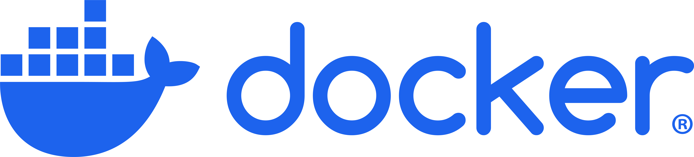
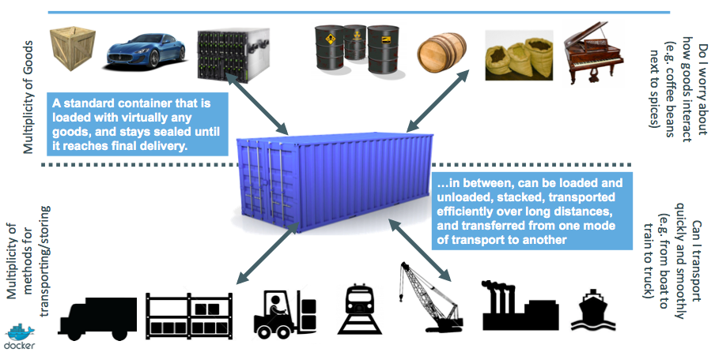
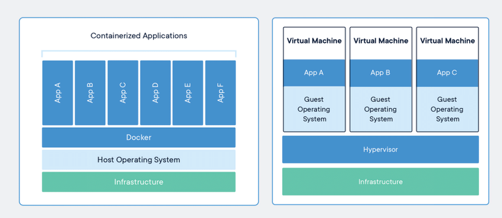
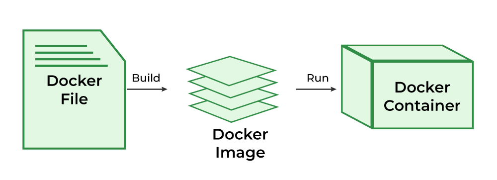
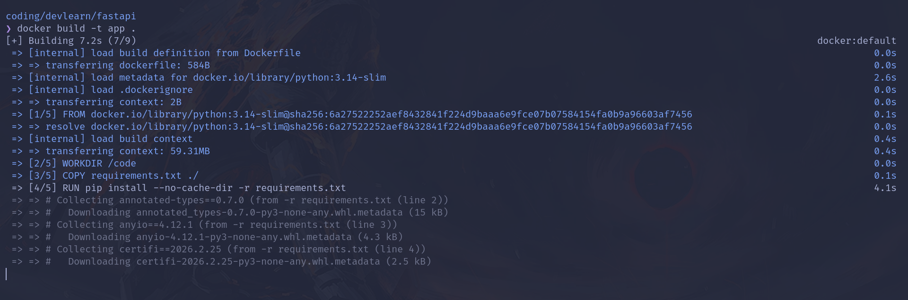
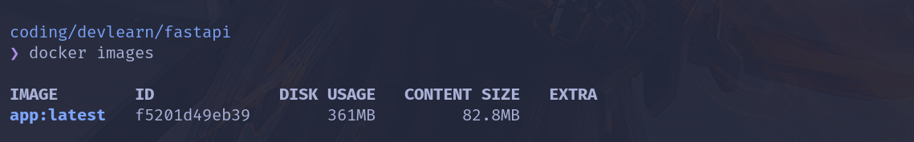
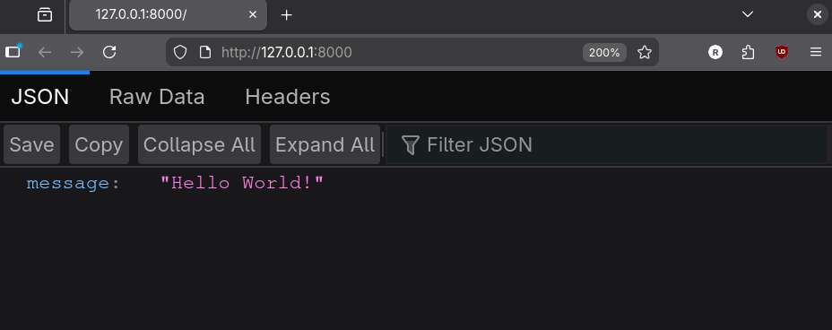
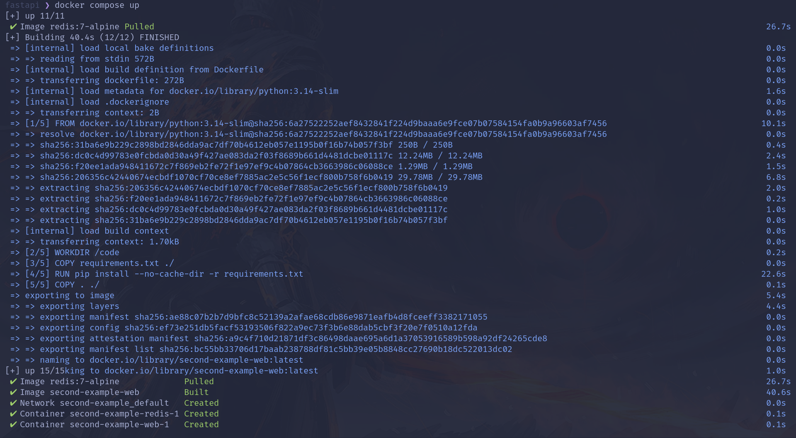
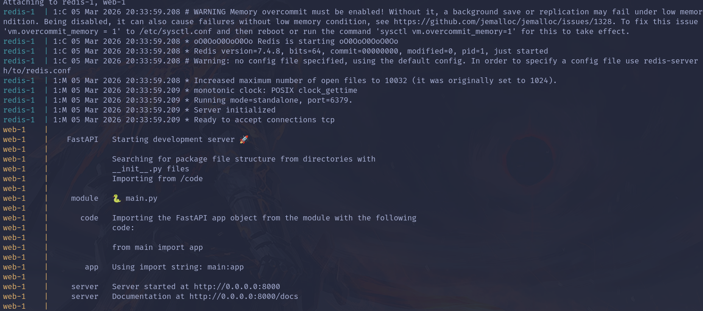

Introdução ao Docker
Conteúdos
Introdução
À esse ponto, você tem todas as ferramentas necessárias para construir web apps simples e completos.
Hoje, iremos trabalhar com uma ferramenta essencial em engenharia de software, conhecida como Docker.


Definição
“O Docker é um conjunto de produtos que utiliza virtualização em nível de sistema operacional para distribuir software em pacotes chamados contêineres.
O Docker automatiza a implantação de aplicativos em contêineres leves, permitindo que eles sejam executados de forma consistente em diferentes ambientes de computação.”
Fonte: Wikipedia
Como analogia, podemos pensar no transporte de produtos antes dos anos 60. Nessa época, os itens era carregados e descarregados de forma manual de um meio de transporte para outro, em diferentes pacotes, diferentes tamanhos, ou mesmo de forma solta. E então, contêineres de transporte foram criados, o que fez com que o carregamento de mercadorias e itens entre navios, trens e caminhões se tornasse mais fácil. A ideia do Docker é a mesma (note a logo de Docker, uma baleia com contêineres): simplificar o envio e implantação de códigos, apps e etc, com uso consistente em qualquer plataforma.
Quase qualquer plataforma... desde que esteja rodando um Kernel Linux.

No mundo de desenvolvimento de software, em times de múltiplos desenvolvedores, problemas podem ocorrer devido à configuração da máquina de uma pessoa ser diferente da máquina de outra pessoa - geralmente ligado à clássica frase "mas funciona na minha máquina"-. Como exemplo, você pode ter uma versão diferente de Python, ou pacotes adicionais (sistema de banco de dados, servidor proxy, etc), que permitem a aplicação rodar tranquilamente no seu computador, enquanto em outras máquinas irá falhar.
Para evitar esses problemas, o Docker surge como uma ferramenta que permite desenvolvedores a isolar as aplicações em uma sandbox (chamados **containers** ou **contêineres**) que rodam no sistema hospedeiro. Uma vantagem do Docker é que nos permite empacotar a aplicação com todas as suas dependências em uma unidade padronizada, para desenvolvimento e envio.
Ao contrário de máquinas virtuais, containers não possuem uma sobrecarga alta, isto é, são extremamente leves em comparação à máquinas virtuais enquanto "servem" o mesmo propósito em algumas coisas, o que torna o uso do sistema e dos recursos mais eficiente.
Containers
Como dito, o método para isolar aplicações era de se usar VMs. Em contrapartida, o custo desse método é a sobrecarga computacional para virtualização de hardware que possibilita a existência do SO visitante.

Os containers, em comparação, possuem uma abordagem diferente. São **processos de sistema** (como qualquer outro processo) que recebem algumas configurações especiais. Alguns desses mecanismos são do Kernel Linux, como:
- Namespaces: permitem limitar o quê um processo pode ver no sistema (Process ID, Rede, usuário, etc).
- Cgroups: gerenciam, limitam e isolam recursos de sistema (CPU, memória, disco, etc) para um grupo de processos.
Com esses mecanismos e alguns outros, os containers operam dentro de limites bem-definidos. E como esses processos estão isolados do sistema por meio de OS-level virtualization, cria-se uma ilusão de que a aplicação está rodando em um sistema totalmente independente, embora compartilhe os recursos com o sistema hospedeiro.
A vantagem de ter um ambiente isolado do sistema é que, além de ser possível compartilhar seu aplicativo/ambiente de desenvolvimento com outras pessoas - evitando o clássico erro de "funciona na minha máquina..." - também possibilita o deployment dessas aplicações de forma mais fácil e consistente, independente se o ambiente alvo é um data center privado, um servidor em cloud, ou mesmo o notebook do seu colega.

Observação
Os containers não são exclusivos ao Docker, e nem criados pelo Docker. O propósito do Docker é ser uma interface simples para o gerenciamento desses containers.
Outras alternativas existem, como podman, cri-o, etc.
Imagens
Vendo que os containers são processos isolados, como exatamente definimos os pacotes, arquivos e binários para usar nele? Como compartilhamos esses ambientes?
É aqui que as imagens de container se tornam essenciais. Uma imagem de container é como um blueprint, um pacote padronizado que inclui os arquivos, binários, bibliotecas e configurações para rodar um container. Como exemplo, uma imagem de um web app Python irá incluir o ambiente de runtime Python, o código do web app, e suas dependências/bibliotecas. Há alguns conceitos importantes sobre imagens:
- Imagens são imutáveis. Ao serem criadas, não podem ser modificadas (ou refatoradas). Só é possível criar novas imagens, ou adicionar mudanças em camadas acima.
- Imagens são compostas de camadas empilhadas. Algo interessante a se notar é que se for necessário mudar a imagem (adicionar pacotes, etc), o Docker utiliza Layer Caching para não precisar reconstruir a imagem inteira.
Ao desenvolver projetos, interagimos com imagens de duas formas: Usando imagens prontas online ou criando imagens.
- No primeiro caso, em geral, utilizamos uma imagem base, tal como Python, para rodar um app de forma isolada, ou para ser a base da nossa imagem de aplicativo (o que nos deixa focar no app ao invés do Python). Essas imagens podem ser encontradas em serviços de registro como Docker Hub ou Azure Container Registry.
- No segundo caso, a partir de uma imagem pronta, adicionamos o código do nosso aplicativo. A configuração da imagem é feita por meio do Dockerfile, um arquivo usado para guiar o construtor de imagem nos comandos a rodar, arquivos a copiar, etc. Dessa forma, estendemos a imagem base para criar nossa própria imagem, a que o container se baseará para rodar. Feito isso, podemos publicar nossas imagens nesses registros para compartilhamento e deployment fácil em qualquer lugar.

Com essa base em mente, vamos colocar em prática o uso de Docker e containerização com o nosso aplicativo!
Construindo e rodando nosso primeiro container com Dockerfile
Antes de mais nada, tenha o Docker instalado em seu sistema. Na documentação oficial do Docker temos instruções de como instalar a depender do seu OS, método de instalação preferido, entre outras coisas. Tenha em mente que essa aula irá usar Docker via terminal, então caso tenha interesse no Docker Desktop, terá que aprender por fora.
Além do Docker, será necessário baixar o docker-compose e, possivelmente, o docker-buildx. O primeiro é uma ferramenta para gerenciamento de aplicações multi-container, enquanto o segundo é um motor substituto para a construção de imagens de container.
Na raiz de seu projeto Python, iremos criar o arquivo Docker, nomeado de Dockerfile. Nesse arquivo, iremos providenciar as instruções de como criar uma imagem e quais arquivos, bibliotecas a incluir no container. Aqui está um exemplo de como o arquivo se parece:
FROM python:3.14-slim
ENV PYTHONDONTWRITEBYTECODE=1
ENV PYTHONBUFFERED=1
WORKDIR /code
COPY requirements.txt ./
RUN pip install --no-cache-dir -r requirements.txt
COPY . ./
CMD ["fastapi", "dev", "main.py", "--host", "0.0.0.0"]
Vamos ver o que cada um desses comandos acima faz:
FROM python:3.14-slim: definimos a base para nossa imagem como sendo uma imagem padrão leve (slim) em que o Python 3.14 está instalado. Isto é comum, para que evitemos ter que redefinir o setup básico para cada imagem.ENV PYTHONDONTWRITEBYTECODE=1 e ENV PYTHONBUFFERED=1: são variáveis de ambiente comumente utilizadas em containers rodando aplicações Python, e controlam algumas ações do interpretador Python em ambientes containerizados.WORKDIR /code: definimos o diretório onde rodaremos o comando (quase como dar cd diretorio_meu_projeto no terminal).COPY requirements.txt ./: Assumindo que você tenha passado as dependências do seu app Python para um requirements.txt, isso irá copiar esse arquivo para o diretório de trabalho do container.RUN pip install --no-cache-dir -r requirements.txt: aqui, baseado no arquivo anterior, iremos instalar as dependências do arquivo.COPY . ./: nessa parte, copiamos os arquivos da raiz do projeto . para o diretório de trabalho ./.CMD ["fastapi", "dev", "main.py", "--host", "0.0.0.0"]: especificamos o comando que deve ser rodado ao iniciar o container. Neste caso, iremos iniciar um servidor de desenvolvimento (disponível no pacote fastapi[standard] do pip).
Observação
Copiar o requirements.txt antes do projeto em si nos traz algumas otimizações relacionadas à Layer caching.
Se mudarmos o código fonte main.py, as dependências não terão que ser reinstaladas na imagem, graças à esse caching por camadas!
Também existem outras otimizações, sinta-se livre para pesquisar pela documentação do Docker.
Agora que possuimos essa imagem, podemos construir nossa imagem. O comando utilizado para criar a imagem é o docker build, que se baseia em um Dockerfile. Para criar a imagem, rode na raiz do projeto:
>> docker build -t app .
Isso irá iniciar o processo de construção da imagem. A flag -t é usada para nomear a imagem.

Rodando docker images, podemos ver nossa imagem listada:

Finalmente, para iniciar nosso app em um container baseado na imagem construída, utilizamos o docker run:
>> docker run --name app_container -p 8000:8000 app:latest
Note que, acessando http://127.0.0.1:8000/, acessamos o site através da porta 8000 do container, que está exposta.

Introdução ao Docker Compose
Observação
A seção a seguir aborda alguns conceitos e programas que não foram e nem serão cobrados nesta fase da disciplina, como PostgreSQL, Redis, etc. Serve mais como uma parte expositiva, e como uma preparação para um dos exercícios.
Mesmo que nosso web app esteja quase pronto, em ambientes reais, ele nunca será "apenas" um script em python. Geralmente, precisa de:
- Um Banco de Dados mais robusto, como PostgreSQL, MongoDB
- Um Cache, como Redis
- Entre outros serviços
O problema clássico "funciona na minha máquina" também poderia ocorrer com esses sistemas, o que nos leva à querer containerizar os mesmos.
Ainda assim, parece meio ineficiente obter várias imagens para essas aplicações, criar uma rede compartilhada que conecte os containers de forma manual, e lembrar das variáveis de ambiente toda vez que iniciarmos o desenvolvimento no projeto. Para isso, temos uma ferramenta adicional que irá nos ajudar:
Docker Compose.
Definição
“O Docker Compose é uma ferramenta para definir e executar aplicações com múltiplos contêineres. É a chave para uma experiência de desenvolvimento e implantação simplificada e eficiente.
O Compose simplifica o controle de aplicações, facilitando o gerenciamento de serviços, redes e volumes em um único arquivo de configuração YAML. Em seguida, com um único comando, você cria e inicia todos os serviços a partir do seu arquivo de configuração.”
Fonte: Docker Docs
Note que em um app completo, é intuitivo precisar de vários containers para rodar a aplicação, então, ao invés de rodar vários comandos no terminal para poder conectar esses containers, utilizamos um arquivo YAML chamado docker-compose.yml que permitirá a configuração de todos os serviços.
Para um exemplo um pouco mais complexo, considere o seguinte main.py em FastAPI:
from fastapi import FastAPI
from redis import Redis
import os
app = FastAPI()
redis_host = os.getenv("REDIS_HOST", "localhost")
cache = Redis(host=redis_host, port=6379, decode_responses=True)
@app.get("/")
def index():
hits = cache.incr("visitor_count")
return {
"message": "Olá visitante!",
"total_visitors": hits
}
- Aqui, iremos utilizar o Redis, um sistema de caching. De forma bem simples, ele armazena pares Chave-Valor no sistema, e é útil para consultas que precisam ser rápidas (pois são armazenadas na RAM). É amplamente utilizado em ambientes reais de produção. Não se esqueça de instalar a lib
redis em sua venv!
- A lógica do aplicativo é simples: implementar uma rota que incrementa o valor da chave
visitor_count dentro do serviço Redis a cada vez que é acessada.
- Note que, se estivéssemos rodando Redis diretamente na nossa máquina, nós nos conectaríamos à porta do serviço via
localhost ou 127.0.0.1. Nesse caso, ao usar Docker Compose, ele irá nos possibilitar nomear o serviço Redis, e poderemos nos conectar utilizando esse nome ao invés do IP do container. Se o IP mudar, o Docker Compose cuidará disso, e o aplicativo não irá quebrar.
Para o Dockerfile, não iremos mudar nada, o que definimos anteriormente funcionará bem.
Finalmente, para o docker-compose.yml, iremos definir dois serviços: um para o nosso código, e um para uma imagem Redis:
services:
web:
build: .
ports:
- "8000:8000"
environment:
- REDIS_HOST=redis
depends_on:
- redis
redis:
image: redis:7-alpine
- No arquivo acima, especificamos que iremos rodar dois serviços, nomeados
web e redis. O primeiro cuidará do container do nosso servidor FastAPI, enquanto o segundo irá definir um container rodando Redis.
- Ademais, para o container de servidor, definimos que a imagem seja construída baseada no Dockerfile presente na raiz do projeto (
build: .), que tenha a porta 8000 exposta para o nosso computador, e definimos uma variável de ambiente REDIS_HOST, usada para o servidor se conectar ao container Redis. Além disso, o serviço web dependerá do serviço redis, com depends_on: ....
Por fim, para rodar o sistema por completo, usamos o comando docker compose up. Isso irá fazer a etapa de build da imagem, além de configurar os containers corretamente:
"Exemplos do sistema rodando"

E ao acessar o site, podemos ver a variável total_visitors incrementando à cada vez que visitamos, significando que os containers estão se comunicando corretamente.

Para desconectar dos logs do Docker Compose, aperte a tecla d no terminal, ou, alternativamente, adicione a flag -d ao rodar docker compose up para voltar ao seu terminal após o início do app. Para parar os containers, utilize docker compose down na raiz do projeto.
No dia-a-dia, são utilizados vários outros comandos além de docker run, docker build ou docker compose up. Alguns dos mais úteis são:
docker ps ou docker container ls: lista os containers ativos.docker stop <container_name>: para um container ativo.docker start <container_name>: inicia um container parado.docker logs -f <container_name>: imprime o log de um container.docker exec -it <container_name> sh: abre um terminal iterativo dentro do container com o shell sh. É possível abrir com bash caso a imagem base suporte.docker rm <container_name>: remove um container parado.docker pull <image_name>: baixa uma imagem de um registry como Docker Hub.docker images: lista as imagens.docker rmi <image_name>: remove uma imagem.docker system prune: remove dados não-utilizados, como containers parados, imagens paradas, redes, entre outras coisas. Extremamente útil para limpar o espaço de disco, visto que o uso de Docker pode ocupar um grande espaço no disco em casos de construir imagens repetidamente. (Nota: a flag --volumes também removerá volumes, enquanto a flag "nuclear" --all irá LIMPAR TUDO, use isso SOMENTE se souber o que está fazendo).docker stats: verifica o uso de recursos (CPU, memória) dos containers.
Há muito mais a ser explorado com Docker, Docker Compose e as ferramentas correlatas, principalmente quando utilizado em conjunto com banco de dados como PostgreSQL, MySQL, entre outros, ou serviços/aplicações diferentes. Ainda assim, esperamos que essa aula tenha servido bem para entender melhor o que é essa ferramenta, e os conceitos por trás dela :)
Desafios proposto
-
Containerize sua aplicação Python com FastAPI, criando um Dockerfile. Caso seu projeto utilize programas externos como Redis, ou um banco de dados diferente do visto em aula, configure um arquivo
docker-compose.yml para comunicação entre os serviços.
-
Baseando-se no
main.py proposto nesta aula, copie o seguinte Dockerfile
FROM python:latest
RUN apt-get update && apt-get install -y gcc git vim
COPY . /app
WORKDIR /app
RUN pip install -r requirements.txt
ENV REDIS_HOST=localhost
CMD fastapi dev main.py --port 8000
- O arquivo acima está otimizado para a aplicação? Você consegue dizer em quais pontos podemos melhorar?
- Ao construir a imagem, notará que o tamanho excede 1G, enquanto que a imagem construida em sala está em torno de 300MB. Procure tentar diminuir a imagem, e explique seu caminho.
- Ao rodar
docker build uma vez, adicione algum comentário no main.py e construa outra vez. O tempo para construção foi similar? Podemos melhorar isso?
- Tente iniciar sua aplicação com Docker Compose. Descubra por quê está falhando.